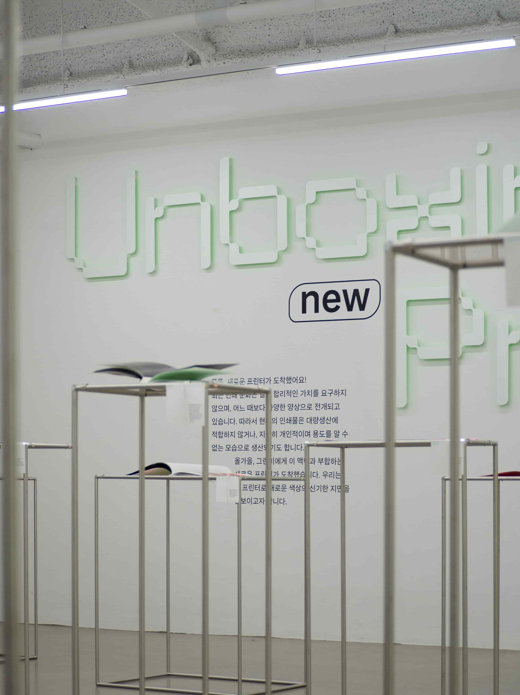

Unboxing New Printer
최근 인쇄 문화는 결코 합리적인 가치를 요구하지 않으며, 어느 때보다 다양한 양상으로 전개되고 있습니다. 따라서 현대의 인쇄물은 대량생산에 적합하지 않거나, 지극히 개인적이며 용도를 알 수 없는 모습으로 생산되기도 합니다.
🖨‘인쇄와 인쇄기’를 소재로 한 20권의 책전시를 디렉팅했습니다. 홍익대학교 그래픽 소모임 그린비는 프린터 판매 회사 바인엑스트라칼라의 형광 프린터를 제공받았습니다. 이 프린터를 두고 2022년 현재 인쇄 매체가 어떤 의미를 갖는지 고찰하며, 호기심을 갖고 탐구했습니다. 우리는 형광색을 대량생산을 위해 조색되는 ‘별색’으로만 여겼던 과거의 한계를 뛰어넘으려 합니다. 앞으로 우리는 어떤 인쇄물을 생산할까요? 또 다음 세대에게 어떤 인쇄물을 전해줄 수 있을까요?
🖨‘다품종 소량 생산’이라는 모티브에 맞게 전시의 20개의 모듈을 모두 다른 치수로 제작했습니다. 전시 참여자의 책 펼침면 크기에서 적당한 여백을 사방에 둔 넓이를 구하고, 그 크기에 적합한 개별 높이를 설정했습니다. 모듈의 높이는 85cm, 95cm, 105cm, 115cm, 125cm로 나뉘어 책을 내려다 볼 때 시각적으로 적합한 거리감을 유도했습니다. 또, 이렇게 개별화되면서 높거나 낮아진 모듈에 불편감을 느끼는 관람자를 배려해 발 디딤대를 제공하고, 책을 집어 들어 관람하기를 허용했습니다.
